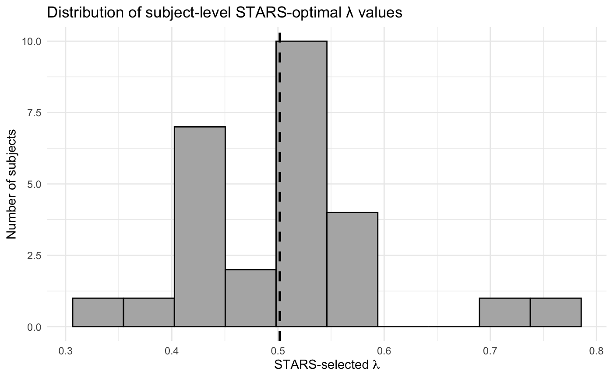
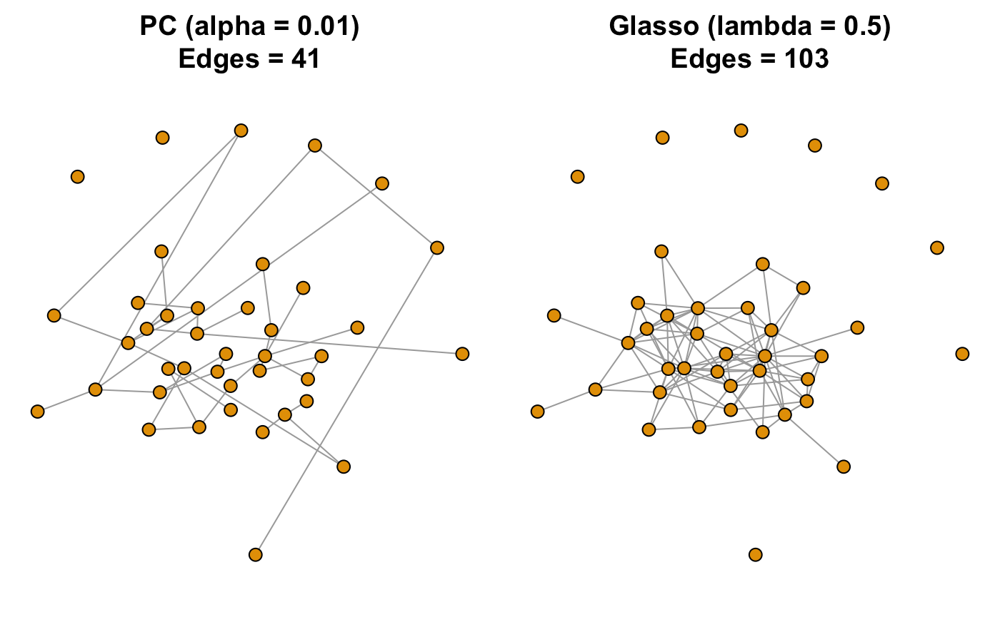
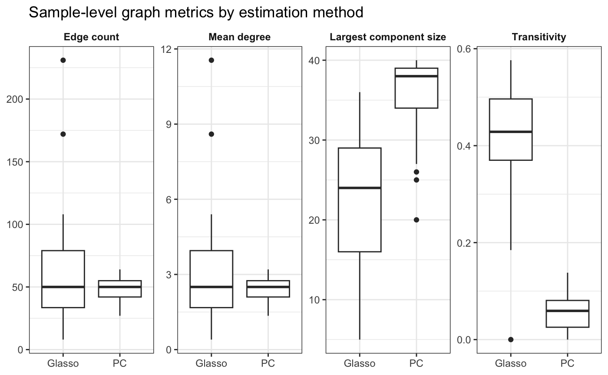

This project was completed in December 2025 for my course, “P8131: Graphical Models of Complex Health Data,” at Columbia University.
##
## <div class="project-tags">
## <span class="tag tag-method">Graphical Models</span>
## <span class="tag tag-data">fMRI</span>
## <span class="tag tag-method">High-Dimensional</span>
## <span class="tag tag-method">PC Algorithm</span>
## <span class="tag tag-method">Graphical Lasso</span>
## <span class="tag tag-analysis">Classification (LOOCV)</span>
## </div>This is a course at the intersection of statistics and machine learning, focusing on graphical models. In complex systems with many (perhaps hundreds or thousands) of variables, the formalism of graphical models can make representation more compact, inference more tractable, and intelligent data-driven decision-making more feasible. We will focus on representational schemes based on directed and undirected graphical models and discuss statistical inference, prediction, and structure learning. We will emphasize applications of graph-based methods in areas relevant to health: genetics, neuroscience, epidemiology, image analysis, clinical support systems, and more. We will draw connections in lecture between theory and these application areas. The final project will be entirely “hands on,” where students will apply techniques discussed in class to real data and write up the results.
This is an open-ended data analysis project, where you can gain some experience applying methods based on graphical models to real data. You can use whatever methods you like, as long as they are related to the graphical methods we discuss in the course. Whatever graph(s) you specify or learn, you must also do some statistical test or parameter estimation based on the graph(s) to answer a substantive scientific question. You should compare at least two approaches/methods/settings. That is, you should consider what someone else might do alternatively to your proposal, try it, and compare results. You must justify all your analysis choices — how you chose tuning parameters, why you chose certain parametric forms or model classes, etc.
All data and code is accessible here.
Can you somehow reliably “predict” ASD status on the basis of learned connectivity networks? Can you use learned networks to classify individuals into ASD vs NT categories? What features, if any, of learned connectivity help predict ASD status?
The goal of this project is to evaluate whether subject-specific brain connectivity networks estimated from resting-state fMRI data can be used to distinguish individuals with Autism Spectrum Disorder (ASD) from neurotypical (NT) controls. We aim to assess how different graph estimation methods can affect prediction/classification performance. We hypothesize that differences in structure learning approaches (PC vs graphical lasso) for graph estimation will lead to differences in predictive accuracy for ASD classification.
Functional brain connectivity data is very useful to understand ASD in neuroimaging research because it offers rich information about large-scale brain organization by measuring coordinated activity across many regions of interest (ROIs). However, these data are often extremely high-dimensional relative to the number of subjects, making naive modeling approaches noisy, difficult to interpret, and statistically unstable. This motivates the use of graphical models that impose structural constraints on the estimated network.
Graphical models are well-suited to high-dimensional fMRI data because they aim to recover sparse conditional dependence structures, separating direct relationships from indirect associations. However, different graphical modeling approaches have varying target measures and rely on distinct assumptions. For instance, the PC algorithm performs hypothesis testing of conditional independence to recover equivalence classes of causal graphs, while graphical lasso estimates an undirected graph (using the precision matrix) via penalized likelihood.
Using the PC skeleton as a reference structure provides a more direct comparison between these methods because it returns an undirected graph. By comparing graphs derived from graphical lasso to the PC skeleton, we can assess whether edges selected via penalized likelihood align with those selected by conditional independence tests. We can further evaluate whether differences in how these methods encode conditional dependence translate into meaningful differences in predicting ASD status.
To perform this analysis, we used resting-state fMRI time-series measurements from CMU. This data set consists of 14 individuals with ASD and 13 NT controls aged 19-40. For each subject, neural activity was recorded on a fixed set of 160 ROIs, so that all individuals share the same number of variables. An accidental 161st ROI was removed from the raw data for all subjects. The number of time points varies slightly across subjects due to preprocessing steps that remove volumes affected by head motion or other artifacts. On average, each participant contributed approximately 220 post-processed time points. Data were sampled every 2 seconds (TR = 2s), with a voxel resolution of 3mm × 3mm × 3mm. Participant-level metadata, including diagnostic status (1 = ASD, 2 = NT), was also provided. These labels were used as the outcome variable in prediction.
pheno = read_csv("data/graph_data/phenotypic_CMU.csv") %>%
janitor::clean_names() %>%
mutate(diagnosis = factor(dx_group, levels = c(1, 2), labels = c("ASD", "NT"))) %>%
mutate(
y = if_else(diagnosis == "ASD", 1L, 0L),
sub_id = as.character(sub_id)
)
y = pheno$y
names(y) = pheno$sub_id
# Keep track of subjects
subject_ids = pheno$sub_id
load_subject_ts = function(sub_id, data_dir = "data/graph_data") {
# Two file path options
pathA = file.path(data_dir, paste0("CMU_a_00", sub_id, "_rois_dosenbach160_1D.csv"))
pathB = file.path(data_dir, paste0("CMU_b_00", sub_id, "_rois_dosenbach160_1D.csv"))
# Pick whichever file exists
if (file.exists(pathA)) {path_to_use = pathA
} else if (file.exists(pathB)) {path_to_use = pathB
} else {stop(paste("No file found for subject", sub_id))}
X = as.matrix(read.table(path_to_use, header = FALSE, sep = "\t"))
# drop column 161 (bug)
if (ncol(X) >= 161) {X = X[, -161, drop = FALSE]}
# scale the ROIs
X_scaled = scale(X, center = TRUE, scale = TRUE)
return(X_scaled)
}
ts_scaled = lapply(subject_ids, load_subject_ts)
names(ts_scaled) = subject_ids
roi_map = read_csv("data/graph_data/dos160_labels.csv", col_names = c("roi", "region"), skip = 1) %>%
mutate(
roi = as.integer(roi),
region = str_trim(region)
) %>%
mutate(region = make.names(region))To reduce dimensionality and improve the stability of graphical
estimation, these ROIs were grouped into 40 broader regions using the
mapping provided in doi_labels.csv. For each subject,
ROI-level time series within the same region were averaged to produce a
regional time series representation. This aggregation substantially
reduces the number of conditional independence tests required by
PC-based methods, improving statistical power and limiting the detection
of spurious edges for our small sample \(n=27\). At the same time, reducing the
number of variables relative to the number of time points improves the
numerical stability of precision matrix estimation for graphical lasso.
The regional aggregation provides a bias–variance trade-off that enables
more reliable estimation of subject-level connectivity structure.
Formally, for a subject with time-series matrix size \(X \in \mathbb{R}^{T \times 160}\), the data were collapsed into \(Z \in \mathbb{R}^{T \times 40}\) by averaging ROIs within each aggregated region. All time-series data was scaled to have mean 0 and variance 1. From this point onward, all references to ROIs refer to the 40 standardized regions.
The final dataset contains all 27 individuals’ various time-series data across 40 standardized regions, merged with their diagnosis label.
collapse_subject_to_regions = function(X, roi_map) {
stopifnot(is.matrix(X), ncol(X) == nrow(roi_map))
regions = roi_map$region
idx_by_region = split(seq_along(regions), regions)
Z = vapply(idx_by_region, function(idx) {
if (length(idx) == 1) X[, idx]
else rowMeans(X[, idx, drop = FALSE], na.rm = TRUE)
}, FUN.VALUE = numeric(nrow(X)))
Z = as.matrix(Z)
colnames(Z) = names(idx_by_region)
Z
}
# Region time series: list of T×K matrices
ts_region = imap(ts_scaled, ~ collapse_subject_to_regions(.x, roi_map))For each subject, we estimate an undirected graph skeleton using the PC algorithm applied to region-level fMRI time series, where each node represents one of the 40 brain regions and an edge indicates conditional dependence between two regions.
fit_pc_skeleton = function(X, alpha = 0.05, m.max = NULL) {
K = ncol(X)
if (is.null(m.max)) m.max = K - 2
labels = colnames(X)
if (is.null(labels)) labels = paste0("R", seq_len(K))
suffStat = list(C = cor(X, use = "pairwise.complete.obs"),
n = nrow(X))
pc_fit = pc(suffStat = suffStat,
indepTest = gaussCItest,
labels = labels,
alpha = alpha,
m.max = m.max,
verbose = FALSE)
A = as(pc_fit@graph, "matrix")
S = ((A != 0) | (t(A) != 0)) * 1L # undirected skeleton
diag(S) = 0
S
}
count_edges = function(S) sum(S != 0) / 2Since conditional independence is assessed via partial correlations, the PC algorithm assumes approximate multivariate Gaussianity of the region-level time series. It also assumes there is no unmeasured confounding. Graph estimation is performed separately for each subject, implicitly assuming within-subject temporal stationarity and independence across subjects.
To control the number of false edges detected from conditional independence testing, we tuned \(\alpha\) using a stability-sparsity tradeoff. For each candidate \(\alpha \in \{0.001, 0.005, 0.01, 0.025, 0.05, 0.1\}\), we evaluated the stability of the graph using bootstrap resampling of the time-series (50 bootstraps per subject).
bootstrap_edge_probs = function(X, alpha, B = 50, m.max = NULL, seed = 1) {
set.seed(seed)
K = ncol(X)
counts = matrix(0L, K, K)
for (b in 1:B) {
idx = sample(1:nrow(X), replace = TRUE)
S_b = fit_pc_skeleton(X[idx, , drop = FALSE], alpha = alpha, m.max = m.max)
counts = counts + S_b
}
P = counts / B
diag(P) = 0
P
}
instability = function(P) mean(P * (1 - P)) # lower = more stableFor each bootstrap replicate, the PC skeleton was re-estimated, and “instability” was quantified as the proportion of edges that differed from the original estimate.
tune_alpha_all = function(ts_region, subject_ids,
alphas = c(0.001, 0.005, 0.01, 0.02, 0.05, 0.1),
B = 50, m.max = NULL, seed = 1) {
out = lapply(alphas, function(a) {
# ---- per-subject computations for THIS alpha ----
per_subj = lapply(seq_along(subject_ids), function(i) {
id = subject_ids[i]
X = ts_region[[id]]
P = bootstrap_edge_probs(X, alpha = a, B = B, m.max = m.max, seed = seed + i)
S = fit_pc_skeleton(X, alpha = a, m.max = m.max)
data.frame(
id = id,
alpha = a,
instab = instability(P),
edges = count_edges(S),
stringsAsFactors = FALSE
)
})
per_subj = do.call(rbind, per_subj)
# ---- aggregate across ALL subjects (one row per alpha) ----
data.frame(
alpha = a,
instab_mean = mean(per_subj$instab, na.rm = TRUE),
instab_median = median(per_subj$instab, na.rm = TRUE),
instab_sd = sd(per_subj$instab, na.rm = TRUE),
edges_mean = mean(per_subj$edges, na.rm = TRUE),
edges_median = median(per_subj$edges, na.rm = TRUE),
edges_sd = sd(per_subj$edges, na.rm = TRUE),
n_subjects = nrow(per_subj),
stringsAsFactors = FALSE
)
})
do.call(rbind, out)
}Across all subjects, increasing \(\alpha\) led to monotonic increases in both edge density and bootstrap instability. We therefore selected \(\alpha = 0.01\) based on a stability–sparsity tradeoff, where we focused on retaining moderately sparse graphs with low variability across bootstrap samples and subjects. Results were qualitatively similar for \(\alpha \in \{0.01,0.025\}\), and \(\alpha = 0.01\) was used for all downstream analyses.
alphas = c(0.001, 0.005, 0.01, 0.025, 0.05, 0.1)
res_alpha = tune_alpha_all(ts_region, subject_ids, alphas = alphas, B = 50, seed = 1)
res_alpha| alpha | Instability Mean (SD) | Edge Counts Mean (SD) |
|---|---|---|
| 0.001 | 0.0167 (0.0022) | 34 (8.5) |
| 0.005 | 0.0209 (0.0024) | 43 (10.3) |
| 0.010 | 0.0233 (0.0024) | 48 (10.1) |
| 0.025 | 0.0273 (0.0026) | 56 (9.8) |
| 0.050 | 0.0310 (0.0027) | 63 (10.7) |
| 0.100 | 0.0359 (0.0029) | 74 (11.5) |
Using the selected global \(\alpha = 0.01\), a PC skeleton was estimated for each subject. Skeleton adjacency matrices were vectorized by extracting upper-triangular edge indicators, producing a subject-by-edge matrix.
pc_skel_list_v1 = purrr::map(ts_region, ~ fit_pc_skeleton(.x, alpha = 0.01, m.max = NULL))For each subject, we estimated an undirected functional connectivity graph using the graphical lasso, where nonzero off-diagonal entries of the estimated precision matrix indicate conditional dependence between regions.
fit_huge_glasso_skeleton = function(X, lambda, standardize = TRUE, eps = 1e-5) {
# huge can take a single lambda
fit = huge(X, method = "glasso", lambda = lambda, verbose = FALSE)
# precision matrices
Theta = fit$icov[[1]]
S = (abs(Theta) > eps) * 1L
diag(S) = 0L
S
}
count_edges = function(S) sum(S != 0) / 2Graphical lasso assumes approximate multivariate Gaussianity of the region-level time series and sparsity of the underlying precision matrix. Estimation is performed separately for each subject, implicitly assuming within-subject stationarity and independence across subjects. These assumptions provide a good parallel to the PC implementation.
The graphical lasso regularization parameter \(\lambda\) was selected using the Stability
Approach to Regularization Selection (StARS) implemented in the
huge package. For each subject, graphical lasso models were
fit across a grid of 30 logarithmically spaced \(\lambda\) values ranging from 0.08 to
0.9.
stars_select_lambda_one_subject = function(X, lambdas, standardize = TRUE, stars_thresh = 0.1, rep_num = 100, seed = 1) {
set.seed(seed)
fit = huge(X, method = "glasso", lambda = lambdas, verbose = FALSE)
# STARS selection
sel = huge.select(fit, criterion = "stars", stars.thresh = stars_thresh,
stars.subsample.ratio = 0.5, rep.num = rep_num, verbose = FALSE)
list(
lambda_opt = sel$opt.lambda,
idx_opt = sel$opt.index,
stars = sel$stars # vector over lambdas
)
}Stability was assessed using repeated subsampling of time points (subsampling ratio = 0.5, 50 repetitions), and instability was computed based on variability in edge inclusion across subsamples. For each subject, the optimal \(\lambda\) was defined as the smallest value for which instability fell below 0.1.
tune_lambda_stars_all = function(ts_region, subject_ids, lambdas, standardize = TRUE, stars_thresh = 0.1,
rep_num = 100, seed = 1) {
per_subj = lapply(seq_along(subject_ids), function(i) {
id = subject_ids[i]
X = ts_region[[id]]
res = stars_select_lambda_one_subject(X = X, lambdas = lambdas, standardize = standardize,
stars_thresh = stars_thresh, rep_num = rep_num, seed = seed + i)
data.frame(
id = id,
lambda_opt = res$lambda_opt,
idx_opt = res$idx_opt,
stringsAsFactors = FALSE
)
})
per_subj = do.call(rbind, per_subj)
# pick a global lambda across subjects
lambda_global = stats::median(per_subj$lambda_opt, na.rm = TRUE)
summary = data.frame(
stars_thresh = stars_thresh,
rep_num = rep_num,
lambda_global = lambda_global,
lambda_opt_mean = mean(per_subj$lambda_opt, na.rm = TRUE),
lambda_opt_median = stats::median(per_subj$lambda_opt, na.rm = TRUE),
lambda_opt_sd = stats::sd(per_subj$lambda_opt, na.rm = TRUE),
stringsAsFactors = FALSE
)
list(
per_subject = per_subj,
summary = summary
)
}To ensure consistent sparsity across subjects, a single global regularization parameter was selected as the median of the subject-specific optimal \(\lambda\) values. \(\lambda = 0.5\) was chosen to estimate graphical lasso networks for all subjects.
lambdas = exp(seq(log(0.08), log(0.9), length.out = 30))
lambdas = sort(lambdas, decreasing = TRUE)
res_stars = tune_lambda_stars_all(ts_region = ts_region, subject_ids = subject_ids, lambdas = lambdas,
stars_thresh = 0.1, rep_num = 50, seed = 1)
global_lambda = res_stars$summary[["lambda_global"]]
ggplot(res_stars$per_subject, aes(x = lambda_opt)) +
geom_histogram(bins = 10, fill = "gray70", color = "black") +
geom_vline(xintercept = global_lambda, linetype = "dashed", linewidth = 1) +
labs(
x = expression("STARS-selected " * lambda),
y = "Number of subjects",
title = "Distribution of subject-level STARS-optimal λ values"
) +
theme_minimal()
Using the selected regularization parameter, subject-level graphical lasso models were refit using the full time series for each subject. Undirected binary adjacency matrices were constructed by thresholding the estimated precision matrices at 0.00001. Nonzero off-diagonal entries indicated conditional dependence between pairs of aggregated brain regions. Diagonal entries were set to zero, and all graphs were treated as unweighted and undirected.
glasso_fit_huge = function(X_subj, lambda, tol = 1e-5) {
if (nrow(X_subj) == 40) X_subj = t(X_subj)
stopifnot(ncol(X_subj) == 40)
X_subj = scale(X_subj)
out = huge(X_subj, method = "glasso", lambda = lambda)
labels = colnames(X_subj)
if (is.null(labels)) labels = paste0("R", seq_len(K))
Theta = out$icov[[1]]
rownames(Theta) = colnames(Theta) = labels
# binary adjacency from Theta
A = (abs(Theta) > tol) * 1
diag(A) = 0
rownames(A) = colnames(A) = labels
list(Theta = Theta, A = A)
}
# Build adjacency list for all participants
glasso_fit_list = lapply(subject_ids, function(id) glasso_fit_huge(ts_region[[id]], global_lambda))
names(glasso_fit_list) = subject_ids
glasso_theta_list = lapply(glasso_fit_list, `[[`, "Theta")
glasso_adj_list = lapply(glasso_fit_list, `[[`, "A")To obtain lower-dimensional representations of subject-level connectivity graphs suitable for classification, each estimated graph was summarized using a set of global network metrics. All graphs were treated as undirected and unweighted.
For each subject, the following graph summary metrics were computed
using the igraph package:
Edge count: the total number of edges in the graph
Mean degree: the average number of connections per ROI (strongly correlated to edge count but expressed at the ROI level)
Degree standard deviation: variability of the number of connections across ROIs (higher values indicate that some regions act as hubs while others are weakly connected)
Transitivity: how often neighboring ROIs are also connected to each other
Global efficiency: can most regions be reached from one another through relatively short paths, even if the network is sparse?
Largest component size: the number of ROIs contained in the largest connected subgraph
graph_metrics_from_adj = function(A) {
A = (A != 0) * 1L
diag(A) = 0L
g = graph_from_adjacency_matrix(A, mode = "undirected", diag = FALSE)
p = nrow(A)
m = ecount(g)
density = if (p > 1) 2*m / (p*(p-1)) else NA_real_
deg = degree(g)
comps = components(g)
gcc = if (m > 0) max(comps$csize) else 0
data.frame(
edge_count = m,
mean_degree = mean(deg),
sd_degree = sd(deg),
transitivity = suppressWarnings(transitivity(g, type = "global")),
global_efficiency = suppressWarnings(global_efficiency(g)),
giant_comp_size = gcc,
stringsAsFactors = FALSE
)
}These metrics were selected to summarize both local and global properties of graph structure while substantially reducing dimensionality relative to the edge matrices. For each subject, the resulting metric values formed a feature vector that was used as input for downstream classification analyses.
#PC
pc_metrics = do.call(rbind, lapply(subject_ids, function(id) {
A = pc_skel_list_v1[[id]]
cbind(id = id, graph_metrics_from_adj(A))
}))
pc_metrics$y = unname(y[pc_metrics$id])
pc_metrics = pc_metrics[!is.na(pc_metrics$y), ]
#Glasso
glasso_metrics = do.call(rbind, lapply(subject_ids, function(id) {
A = glasso_adj_list[[id]]
cbind(id = id, graph_metrics_from_adj(A))
}))
glasso_metrics$y = unname(y[glasso_metrics$id])
glasso_metrics = glasso_metrics[!is.na(glasso_metrics$y), ]Binary classification via simple logistic regression was performed to distinguish ASD from NT subjects using graph summary metrics as predictors. Given the small sample size, classification models were evaluated using leave-one-out cross-validation (LOOCV).
Within each fold, features were standardized using statistics computed from the training set only and then applied to the held-out subject to prevent information leakage. The logistic regression model was fit on the training data and used to generate predicted probabilities for the held-out subject. This procedure was repeated for all subjects to obtain cross-validated predictions.
Model performance was assessed using AUC. AUC was chosen as the primary metric because it is insensitive to class imbalance and provides a threshold-independent measure of discriminative performance.
To assess the relative contribution of individual graph metrics, a leave-one-feature-out analysis was performed. For each metric, the classification procedure was repeated with that metric excluded, and the resulting change in AUC relative to the full model was recorded. Larger decreases in AUC were interpreted as indicating greater importance for classification performance.
loocv_auc_glm = function(df, feat) {
pred = rep(NA_real_, nrow(df))
for (i in seq_len(nrow(df))) {
train = df[-i, ]
test = df[i, , drop = FALSE]
# scale within fold (train only)
mu = sapply(train[, feat, drop=FALSE], mean, na.rm=TRUE)
sdv = sapply(train[, feat, drop=FALSE], sd, na.rm=TRUE); sdv[sdv==0] = 1
Xtr = as.data.frame(scale(train[, feat, drop=FALSE], center=mu, scale=sdv))
Xte = as.data.frame(scale(test[, feat, drop=FALSE], center=mu, scale=sdv))
fit = glm(train$y ~ ., data = data.frame(y=train$y, Xtr), family = binomial())
pred[i] = predict(fit, newdata = Xte, type = "response")
}
as.numeric(auc(roc(y, pred, quiet=TRUE)))
}Figure 2 shows subject-level functional connectivity graphs estimated for an ASD participant (subject 50654) using the PC algorithm (\(\alpha\) = 0.01) and graphical lasso (\(\lambda\) = 0.5). The PC-derived graph is substantially sparser (41 edges) than the graphical lasso graph (103 edges), with more isolated or weakly connected regions. In contrast, the graphical lasso graph exhibits denser connectivity and a more cohesive core structure.
A_pc = pc_skel_list_v1[["50654"]]
A_gl = glasso_adj_list[["50654"]]
met_pc = graph_metrics_from_adj(A_pc)
met_gl = graph_metrics_from_adj(A_gl)
metrics_compare = rbind(
cbind(method = "PC", met_pc),
cbind(method = "Glasso", met_gl)
)
metrics_compare
g_pc = graph_from_adjacency_matrix(A_pc, mode = "undirected", diag = FALSE)
g_gl = graph_from_adjacency_matrix(A_gl, mode = "undirected", diag = FALSE)
V(g_pc)$name = colnames(A_pc)
V(g_gl)$name = colnames(A_gl)
layout_xy = layout_with_fr(g_gl)
par(mfrow = c(1, 2), mar = c(0.5, 0.5, 3, 0.5))
plot(g_pc, layout = layout_xy,
vertex.size = 6, vertex.label = NA,
main = paste0("PC (alpha = ", 0.01, ")\nEdges = ", met_pc$edge_count))
plot(g_gl, layout = layout_xy,
vertex.size = 6, vertex.label = NA,
main = paste0("Glasso (lambda = ", global_lambda, ")\nEdges = ", met_gl$edge_count))
These qualitative differences are reflected in the corresponding graph summary metrics (Table 2). For this subject, graphical lasso yields higher mean degree and degree variability, higher transitivity, and greater global efficiency, indicating increased clustering and more efficient global integration. The PC graph, while sparser, includes a larger giant component, suggesting that fewer edges are sufficient to maintain overall connectivity across regions.
vals_pc = as.numeric(met_pc[1, ])
vals_gl = as.numeric(met_gl[1, ])
names(vals_pc) = names(met_pc)
par(mfrow = c(1, 1), mar = c(8, 4, 2, 1))
barplot(rbind(vals_pc, vals_gl),
beside = TRUE, las = 2,
legend.text = c("PC", "Glasso"),
args.legend = list(x = "topright", bty = "n"),
main = paste("Graph metrics for subject 50654"))| Method | Edge Count | Degree Mean (SD) | Transitivity | Global Efficiency | Largest Component Size |
|---|---|---|---|---|---|
| PC | 41 | 2.05 (1.3) | 0.0395 | 0.2457 | 38 |
| Graphical Lasso | 103 | 5.15 (4.5) | 0.4265 | 0.3482 | 32 |
We further tried to assess whether the structural differences observed in individual subjects generalized across the sample. We compared distributions of graph summary metrics between PC- and graphical-lasso–derived graphs (Figure 3). Across subjects, graphical lasso graphs exhibited greater variability in edge count and mean degree, with several subjects showing substantially denser connectivity patterns. In contrast, PC graphs were more tightly concentrated around lower edge counts and mean degrees, reflecting consistently sparser network estimates. PC graphs tended to have larger largest connected components, indicating that a greater proportion of regions belonged to a single connected subnetwork despite fewer edges overall. Graphical lasso graphs, while denser, showed more variability in connected component structure across subjects. Graphical lasso graphs exhibited substantially higher clustering, consistent with the presence of tightly interconnected groups of regions, whereas PC graphs showed uniformly low transitivity across subjects. Together, these sample-level results mirror the subject-level comparisons and highlight systematic differences in the two graphical modeling methods.

After an initial attempt to use edge-level representations for classification, graph summary metrics yielded improved predictive performance for both methods (see GitHub repo for code and figures on edge-level representations as input).
feature_cols = setdiff(names(pc_metrics), c("id", "y"))
glasso_auc_base = loocv_auc_glm(glasso_metrics, feature_cols)
glasso_imp = sapply(feature_cols, function(f) {
glasso_auc_drop = loocv_auc_glm(glasso_metrics, setdiff(feature_cols, f))
glasso_auc_base - glasso_auc_drop
})
sort(glasso_imp, decreasing = TRUE)
pc_auc_base = loocv_auc_glm(pc_metrics, feature_cols)
pc_imp = sapply(feature_cols, function(f) {
pc_auc_drop = loocv_auc_glm(pc_metrics, setdiff(feature_cols, f))
pc_auc_base - pc_auc_drop
})
sort(pc_imp, decreasing = TRUE)When we used graph summary measures from the PC networks as inputs to the classifier, the model achieved an AUC of 0.64, indicating modest predictive performance (Table 3). To understand which features mattered most, we removed each graph metric one at a time and examined how classification performance changed. Removing measures related to clustering (transitivity) and how unevenly connections were distributed across regions (degree variability) led to the largest drops in performance. In contrast, removing simple measures of overall connectivity, such as the total number of edges, average degree, or the size of the largest connected component, had little effect. This suggests that the classifier relied more on how the network was organized than on how densely connected it was overall.
When we used graph summary measures derived from the graphical lasso networks, classification performance improved, with the model achieving an AUC of 0.73 (Table 3). To understand which graph features were most important, we again removed each metric one at a time and examined how performance changed. The size of the largest connected component had the strongest impact on classification, indicating that how many brain regions were connected into a single network was particularly informative. Measures capturing variability in connectivity across regions, clustering, and overall network integration also contributed meaningfully to performance. In contrast, removing simple measures of overall connectivity, such as the total number of edges or the average number of connections per region, had little effect. This suggests that classification based on graphical lasso networks similarly relied on the organization of the network rather than edge-to-edge connection.
In summary, PC and graphical lasso produced systematically different subject-level connectivity graphs. Graphical lasso yielded denser and more globally integrated networks, whereas PC produced sparser and more fragmented graphs. Low-dimensional graph summary metrics performed modestly for prediction. However, the stability of this signal remains uncertain given the small sample size. Feature importance analyses indicated that measures of global connectedness and network organization contributed most to classification performance for both methods, with higher variability in the graphical lasso method.
Several limitations should be considered when interpreting these findings. First, the small sample size limits statistical power and makes classification performance sensitive to individual subjects, reducing confidence in the stability of predictive results. In addition, subject-level graph estimation yields high-dimensional edge representations that may not be well-suited for classification in small samples. While graph summary metrics provided a more stable alternative, correlations among these metrics may still inflate true predictive ability. Future work could address these challenges by incorporating larger datasets, applying nested cross-validation to better control model selection bias, and using permutation testing or bootstrap-based inference to assess robustness.
Although classification performance was limited, these results underscore the challenges of prediction in small-sample neuroimaging studies and demonstrate the importance of careful graph construction and dimensionality reduction for meaningful downstream analysis.